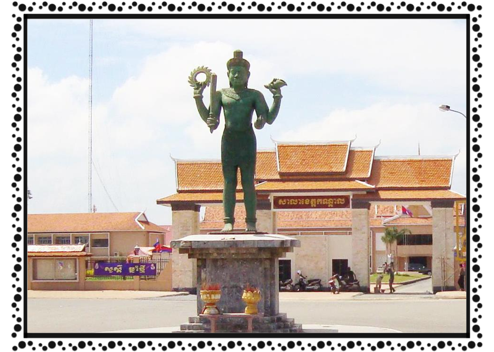

ខេត្ត និងក្រុងនៃព្រះរាជាណាចក្រកម្ពុជា
កណ្តាល

កណ្តាល គឺជាខេត្តនៃប្រទេសកម្ពុជាដែលមានទីតាំងនៅប៉ែកអាគ្នេយ៍នៃប្រទេសនេះ។ ខេត្តកណ្តាល បានបង្ហាញថា មានសក្ដានុពលជាច្រើនដូចជា វិស័យកសិកម្ម ឧស្សាហកម្ម និង ទេសចរណ៍ ជាដែលវិស័យគោលចម្បងក្នុងការអភិវឌ្ឍសេដ្ឋកិច្ចខេត្តទទួលបានការរីកចម្រើន។ រីឯសម្រាប់ប្រព័ន្ធ ហេដ្ឋារចនាសម្ព័ន្ធនៅខេត្តកណ្ដាលគឺជា ខេត្តមានផ្លូវជាតិធំសំខាន់ៗជាច្រើន សម្រាប់តភ្ជាប់ទៅកាន់បណ្ដាខេត្តនានា។ ខេត្តកណ្ដាល ក៏មានស្ពានធំៗឆ្លងទន្លេផងដែរ នឹងមាន ព្រលានយន្តហោះកម្រិតអន្តរជាតិមួយ១កន្លែងផងដែរ។ កសិកម្ម និងការនេសាទ គឺជាឧស្សាហកម្មសំខាន់ពីរនៃខេត្តនេះផងដែរ។
ខេត្តមានព្រំដែន
- ខាងកើតជាប់ខេត្តព្រៃវែង
- ខាងត្បូងជាប់ ខេត្តតាកែវ
- ខាងកើតឈៀងខាងជើងជាប់ ខេត្តកំពង់ចាម
- ខាងកើតឈៀងខាងត្បូងជាប់នឹង វៀតណាម។
ទីរួមខេត្ត គឺក្រុងតាខ្មៅ ដែលមានចំងាយ ១១ គម ខាងត្បូងនៃ[ភ្នំពេញ]។ កណ្ដាលគឺជាខេត្តមួយក្នុងចំណោមខេត្តដែលស្ដុកស្ដម្ភជាងគេក្នុងប្រទេស។ ខេត្តកណា្តលមានស្រុកចំនួន១១ ក្រុង១ ឃុំ១៤៧ ភូមិចំនួន១០៨៧ និង១៤៧សង្កាត់ មានប្រជាជនចំនួន ១០៧៥១២៥នាក់ ហើយខេត្តនេះផងដែរមានផែ្ទដី ៣៥៦៨គីឡូម៉ែតការេ។ ហើយខេត្តនេះផងដែរមានផែ្ទដី ៣៥៦៨ សហាតិមាត្រការ៉េ។ ប្រជាជនខេត្តកណា្តលភាគច្រើនប្រកបរបរកសិកម្ម ដាំដំណាំ ក្រៅពីនេះរដូវធើ្វស្រែ ពួកគាត់មានរបរមួយទៀតគឺ របរឡើងត្នោត និងធើ្វស្រូវប្រាំង ព្រមទាំងដាំដំណាំផ្សេងៗទៀត ដើម្បីផ្គត់ផ្គង់ជីវភាពគ្រួសាររបស់ខ្លួន។